L'objectif de cette page est de regrouper toute les informations que je trouverai sur la route de la Pierre-Lys, du début des travaux par Félix Armand jusqu'à nos jours. Les documents qui mériteraient de figurer dans l'historique et qui sont déjà en place dans d'autres pages, restent dans leur page respective, et ne seront que référencés ici.
Présentation du chemin préexistant en 17226

Attention sur cette carte les repères Nord / Sud sont inversés (Belvianes est en bas par rapport à St Martin contrairement avec le repère standard utilisé aujourd'hui)
1775/1776
Traditionnellement le début des travaux pour créer la route de la Pierre-lys est daté de 17751 -
Mais comme le grand orchestrateur de ces travaux est Félix Armand et que Félix Armand a été désigné curé de St Martin fin 1775, il est plus vraisemblable que les travaux n'aient commencé qu'en 1776.
Il est vrai que Félix Armand avait desservi la paroisse de St Martin avant d'en être nommé curé (dès mars 1775), mais comme il était résident à Belvianes il est vraisemblable qu'il ait souvent eu besoin d'utiliser le chemin passant par dessus les gorges (celui qui prenait une journée entière pour aller de St Martin à Quillan) et ait là conçu son projet de désenclavement de St Martin.
1781
percement du trou du curé
1781 / 1813
Élargissement du chemin creusé
1813
classement de la route en route départementale (voir la polémique sur ce point le Bulletin des lois de la République (ainsi que le site wiki-Sara sur sa page relative aux routes départementales de l'Aude) semble donner raison à Sabatier - la "nomenclature de 1813" prévoit déjà une départementale n° 17 de Quillan à Roquefort - même si les travaux entre St Martin et Roquefort ne sont pas encore engagés)
1814 (Toussaint)
Célébration au trou du curé de la fin de la route.
1815/1821
Poursuite des travaux d'élargissement - creusement du chemin muletier contournant le premier massif à l'entrée des gorges coté St Martin. Les travaux sont payés de gré à gré par Félix Armand mais financés par le département.

Extrait de la Carte de l'Aude de 1818 par François de Houdan (médiathèque de Montpellier) montrant déjà la départementale 17 de Quillan à Roquefort passant par les Gorges de la Pierre-Lys et de Saint-Georges
1821
Service de cantonnier financés par le département - travaux financés directement par le département. Devient la départementale n° 17 7
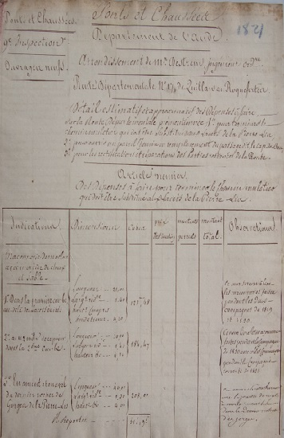24 juillet 1821
Décision du Ministre (de la défense)
LA route de la Pierre-Lys ne doit être rendue praticable que pour les bêtes de sommes et que la largeur ne doit être portée qu'à un mètre soixante dix à deux mètres (Pour interdire les déplacements d'artillerie )
1821/1830
Prolongation de la route vers Axat, puis vers le Roquefortes (cap de Bouc)
Les travaux sur ce trajet sont réalisés par les mineurs - tacherons - de Quillan, Saint Martin en lys (sic) et Axat, les archives départementales de l'Aude possèdent un document exposant une demande de ces mineurs en 1824 pour être indemnisé des surcoûts rencontrés dans les travaux au cap de bouc et au pas de Layguette (la route devait faire 2 mètres, des passages ont été fait à plus de 2 mètres dans certains points du cap de bouc, permettant le croisement, travaux non demandé mais utiles).
1838
Déplacement de la route dans la vallée de Saint Martin
La route trop proche de l'Aude est submersible lors des crues de l'Aude. Il est proposé de la faire passer plus haut.
Premier plan du 28 juin 18387
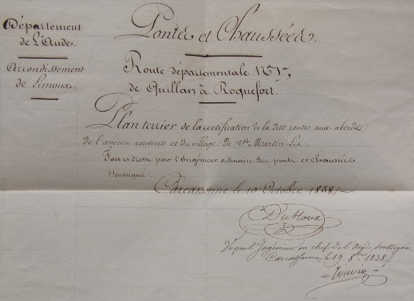 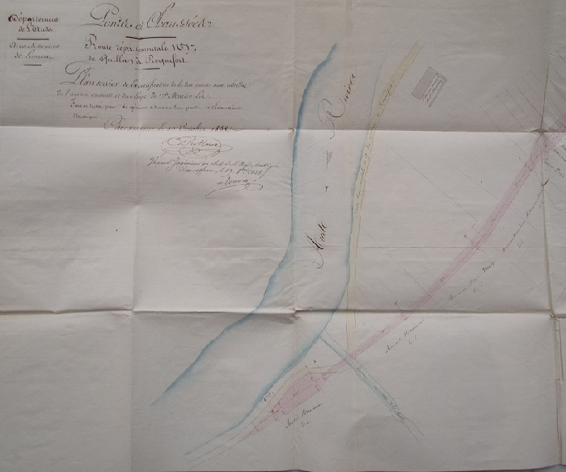 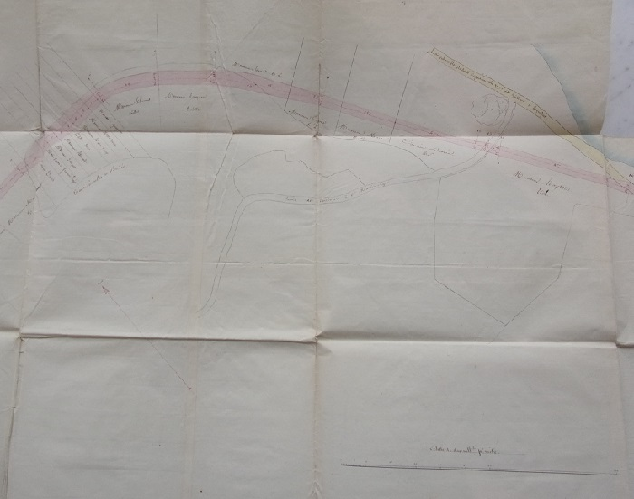 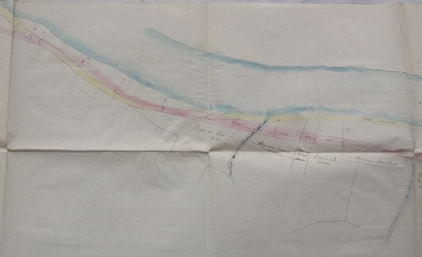 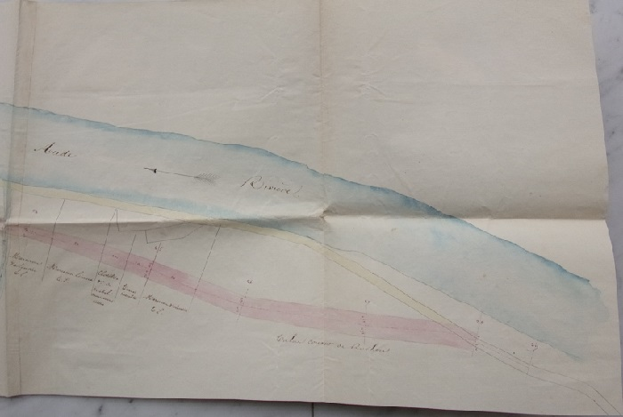plan détaillé du 10 octobre 1838 du déplacement de la route longeant l'Aude pour la rendre insubmersible
Le plan est tout en longueur il est reproduit ici en 4 photos à mettre l'une à coté de l'autre pour le reconstituer7
Voir sur cette carte le dessin des ruines du couvent, est-il fidèle ?
1839
Dans son Rapports et délibérations, le Conseil général du département de l'Aude indique par rapport à la route départementales n°17 :
La route n.° 17 n'est, vous le savez, Messieurs, que muletière; son défaut de largeur la rend très dangereuse sur certains points; il y aurait nécessité de la porter à trois mètres, partout où le terrain n'est pas difficile. Dans les gorges de la Pierre-Lys et de St.-Georges, on la défendrait par des parapets et l'on pratiquerait des gares de distance en distance pour que les mulets chargés pussent s'y croiser. Conformément au voeu que vous avez exprimé dans vos précédentes sessions, ces travaux sont l'objet de conférences entre les ingénieurs civils et le génie militaire ; il faut espérer que ces derniers ne mettront pas d'obstacle à des améliorations réclamées par les besoins de l'industrie et la sûreté publique.
M. l'Ingénieur en chef propose d'affecter à ces travaux d'amélioration une somme de 5,000 fr., en attendant qu'il puisse s'occuper d'un projet complet pour la continuation de la route du côté de Ste.-Colombe et de Roquefort. Je vous propose de porter cette somme à 8,863 fr. 28 c. et de l'allouer au chapitre 24, 3ème section, article 7.
Projet de venue de son Altesse Royale Le duc d'Orléans pour voir la route de la Pierre-Lys
En l'honneur de son Altesse des travaux d'élargissement à 4 m 50 de Belvianes jusqu'à l'entrée des gorges sont entrepris.
Mais malgré les sommes conséquentes qui ont dû être investies dans ces travaux réalisés en temps records de jour comme de nuit, son Altesse n'est jamais venue... (travaux réalisés du 28 août au 14 septembre - voir le récapitulatif des dépenses occasionnées dans le rapport du 10 janvier 1840 dépassant largement (x 3) le devis estimatif du 21 août 1839 - archives départementales)
Il est possible d'apercevoir des murs de pierre à l'entrée les gorges, coté Belvianes, juste après le trou du curé.

Mur dans les gorges - photo Jean Lautier
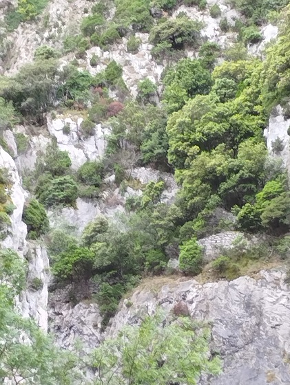Mur dans les gorges - vue depuis le chateau de l'entrée du tunnel ferrovière
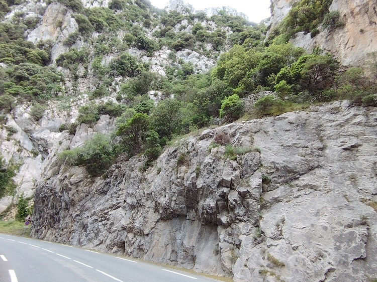 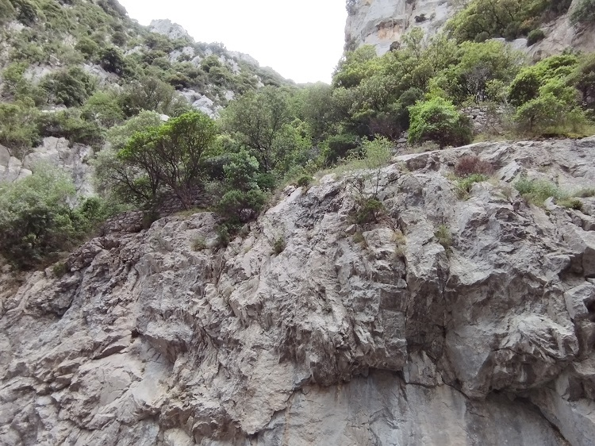 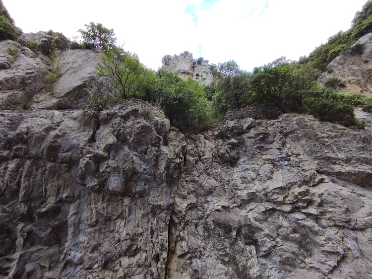 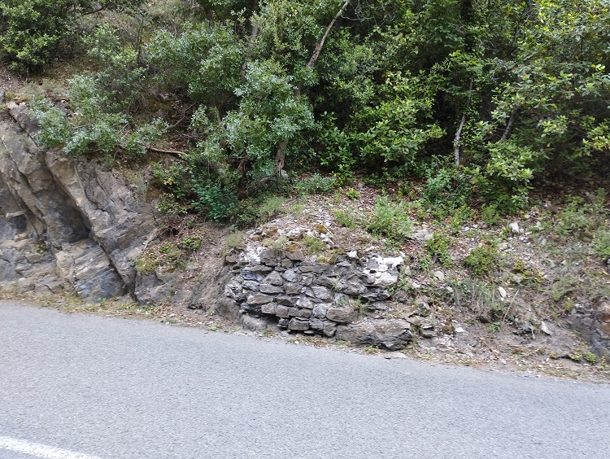Mur dans les gorges - vue depuis le chateau de l'entrée du tunnel ferrovière
Je n'en connais pas l'origine et plusieurs hypothèses ont pu être avancée : ancien chemin antérieur à celui tracé par les martinlysois, petit bout du chemin tracé initialement par Félix Armand, reconfiguré lors d'un des nombreux travaux d'élargissement de la route des gorges... Des explorations réalisées par Amédine, ces murs s'avèrent des murs de soutènement pour éviter des éboulements ou des chuttes de pierre sur la route
Mon avis actuel est que ces protections ont été posé en prévision de la visite de cette Altesse royale
1841
Élargissement de la route du pont du Rébenty jusqu'au pont d'Aliès
Les propriétaires concernés ont été sollicités dès 1838 comme l'indique le registre des délibérations municipales
les plans des travaux sont dressés en 1840 (voir ci-dessous)
L'élargissement de la route est autorisé par les autorités militaires, contrairement à l'élargissement des Gorges qui lui est encore refusé dans un courrier du 26 mars 1841 faisant référence à la décision ministérielle du 24 juillet 1821
les expropriations des propriétaires de Saint Martin peuvent commencer
Cette première étape pour une future route vers Caudiès
Plan détaillé du 26 juin 1840 du déplacement de la route trop étroite sur toute sa longueur en la ramenant près de la rivière et en lui donnant 3m50 de largeur.
Le plan est tout en longueur il est reproduit ici en 4 photos à mettre l'une à coté de l'autre pour le reconstituer.7
1842
Levée de la contrainte des militaires par rapport à la largeur de la route.
1843
Le tracé de route "Royale" de Perpignan à Bayonne est remis en cause pour déterminer s'il doit passer par la Pierre-lys (projet soutenu par le conseil général de l'Aude) ou continuer de passer par le Col de St Louis (comme s'était le cas depuis 1836 - pour l'aménagement du col de St Louis cf JPO 10/10/1835 et 03/05/18362) - Cette discussion soulève l'indignation des communes qui pourraient ne plus être traversées par cette route. Voir sur ces discussions l'exemple de Caudiès donné dans sur le site du Musée virtuel de Caudiès-de-Fenouillèdes (délibérations lors de la séance du 26 août 1843 du Conseil général des Pyrénées Orientales) - (et autre page de ce même site sur la route du col de St Louis)
1845
Pré-Enquête organisée par le Préfet des Pyrénées-Orientales (cf Le journal des Pyrénées-orientales du 28/06/1845
PRÉFECTURE DES PYRÉNÉES-ORIENTALES.
Route Royale N° 117, de Perpignan à Bayonne.
ENQUETE sur l'avant-projet de rectification de la route royale n° 117, entre Caudiès et Quillan , par les vallées de la Boulzanne et de l'Aude.
Nous, Préfet des Pyrénées Orientales, donnons avis que, conformément à notre arrêté, en date de ce jour, et en exécution des ordonnances royales des 18 février 1834 et 15 février 1835, les pièces du projet dont s'agit seront déposées à la préfecture, bureau des Travaux Publics, pendant un mois et demi, du 1er juillet 1845 jusqu'au 15 août suivant inclus , et communiquées, sans déplacement, à toutes les personnes qui voudront en prendre connaissance.
Les observations auxquelles ce projet pourrait donner lieu , seront inscrites sur un registre ouvert à cet effet.
La commission d'enquête, formée conformément à l'article 4 de l'ordonnance royale du 18 février 1834, se réunira le 24 août 1815, à l'hôtel de la Préfecture, à onze heures du matin, pour procéder aux opérations prescrites par la même ordonnance.
Ont été nommés membres de la commission :
MM. Durand, négociant et membre du Conseil général du département, qui la présidera ; Pla et Lalabrègue, membres du même conseil ; François Parès, Tastu-Jaubert et Grosset-Saleta, membres du Conseil de l'arrondissement de Perpignan ; Joseph Fabre, banquier et entrepreneur de diligences ; Picas, avocat ; Edmond Jaubert-de-Passa et Charles Miquel, propriétaires , domiciliés à Perpignan.
A Perpignan , le 26 juin 1845
Signé : Vaïsse.
Dans son Rapports et délibérations de 1845, le Conseil général du département de l'Aude fait le récapitulatif des sommes engagés sur la route départementale n°17 depuis 1839
1852
Carte de l'Aude présentant les routes du département3
Voir en particulier la route de Quillan à Roquefort (route départementale n° 17) qui passe par St Martin de Taissac (sic...), la route de Perpignan à Bayonne qui passe par le col de St Louis (de l'autre coté de la forêt des Fanges route n° 117), un chemin de Caudiès - Puilaurens - Axat qui ne suit pas le ruisseau d'Aliès (route de grande circulation, comme celle du Rébenty) et l'absence de route suivant l'Aude (la future RN 118 - alors qu'on peut voir le "chemin Vauban" (tracé originel passant par Loustalnau, Rodome et Quérigut abandonné le 28 décembre 1866)...)

Détail de la carte de Levasseur de 1852
1855
Percement du tunnel de 80 m à l'entrée des Gorges côté St Martin.
1856
Pour que la route départementale n°17 puisse devenir la route impériale n° 117 il faut l'élargir encore en particulier de la sortie du nouveau tunnel jusqu'au Rébenty et faire passer la largeur de la route à 4m 40 sur toute la longueur, alors qu'à certains endroits elle faisait même pas 2 mètres
Dans la Pierre-Lys même, l'élargissement de la route se poursuit, mais ne s'avère pas si simple... des effondrements dus aux explosions des mines, trop de remblais à sortir, un nouveau tracé pas forcément judicieux... et les coûts explosent.
1859
Un encorbellement à la sortie du nouveau tunnel s'avère dangereux car friable
Il est plus prudent de faire tomber le surplomb (toute la partie rose sur le schéma suivant...)7
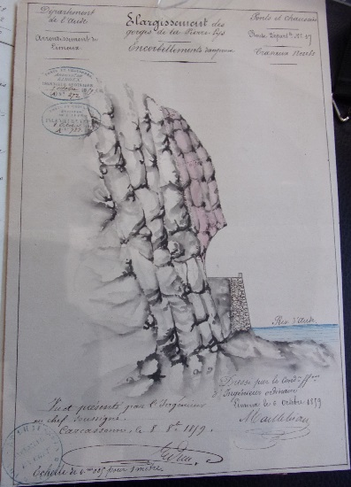
1866
Enquête d'utilité publique pour que la route "impériale" n° 117 entre Perpignan et Bayonne passe par la Pierre-Lys (Route vers Caudiès par le col du Campérier)
Annonce publiée dans le Journal des Pyrénées Orientales du 29 mai 1866 (trouvée sur le site du Musée virtuel de Caudiès-de-Fenouillèdes et du Patrimoine de l'occitanie2
PREFECTURE DES PYRENEES-ORIENTALES.
Arrondissement de Perpignan.
PONTS ET CHAUSSÉES.
Route Impériale n° 117, de Perpignan à Bayonne.
Rectification entre Caudiès et Quillan.
Avant-Projet pour la rectification de cette route, entre la ville de Caudiès et le département de l'Aude.
Enquête d'utilité publique sur l'exécution de ce projet
Nous. Préfet des Pyrénées-Orientales, commandeur de la Légion d'honneur, officier de l'Instruction publique, etc.
Vu la lettre en date du 17 janvier 1866, par laquelle M. le Ministre de l'agriculture, du commerce et des travaux publics, 1° prescrit la préparation d'un avant-projet concernant la rectification de la route impériale n° 117. de Perpignan à Bayonne, par le col de Campérié et les vallées de la Boulzane et de l'Aude, entre Caudiès et Quillan, sur une longueur de 19 269m 40 ; 2° et accorde l'autorisation de soumettre ce projet aux formalités de l'enquête d'utilité publique, dont la durée doit être déterminée par nous, en vertu du décret du 13 avril 1861, art. 2. § 3 ;
Vu les pièces relatives à cet avant-projet, dressé par MM. les ingénieurs ;
Vu la loi du 3 mai 1841, titre Ier et l'ordonnance réglementaire du 18 février 1834, sur les formalités des enquêtes relatives aux travaux publics ;
Considérant que l'importance du projet exige que l'enquête autorisée par la décision ministérielle précitée ait une durée d'un mois,
Arrêtons
Art. 1er. — Une enquête d'utilité publique est ouverte dans le département des Pyrénées Orientales, sur l'avant-projet de la rectification de la route impériale n° 117, entre la ville de Caudiès et le département de l'Aude, dressé par MM. les Ingénieurs des ponts et chaussées.
Elle commencera le 10 mai 1866 et se terminera le 10 juin suivant.
Art. 2. — Toutes les pièces de projet seront déposées, pendant ce délai, à la Préfecture (2e division), où toute personne pourra en prendre connaissance sans déplacement, tous les jours, de 10 heures du matin à midi.
Art. 3. — Un registre sera ouvert pendant le mois de l'enquête, conformément au 1er § de l'article 5 de l'ordonnance du 18 février 1834, à la Préfecture, pour recevoir les observations auxquelles pourrait donner lieu le projet en question.
Art. 4. — La commission qui, aux termes des art. 4 et 6 de l'ordonnance du 18 février 1834, doit être formée au chef-lieu du département, pour examiner les déclarations consignées au registre d'enquête, sera composée de neuf membres, savoir
MM. Bach, membre du Conseil général.
Pla, idem.
Parès, idem.
Benet, membre du Conseil d'arrondissement et maire de Caudiès.
Vallarino, membre du Conseil d'arrondissement.
Lazeu de Peyralade, maire de St-Paul.
Camps, maire d'Estagel.
Gonzalvo Jean, propriétaire à Estagel.
Bataillé Henri, propriétaire à Caudiès
MM. les Ingénieurs en chefs des ponts et chaussées de l'Aude et des Pyrénées-Orientales assisteront aux réunions de la commission.
Art. 5. — Cette commission se réunira , sous notre présidence ou celle de notre délégué, le 15 juin 1866, à 2 heures du soir, à l'hôtel de la Préfecture ; après avoir entendu MM. les Ingénieurs des ponts et chaussées, avoir recueilli de toutes les personnes qu'elle jugerait utile de consulter, les renseignements dont elle croirait avoir besoin, la commission donnera son avis, tant sur l'utilité du projet que sur les oppositions ou observations qui auraient pu se produire pendant l'information.
Ces opérations, dont elle dressera procès-verbal, devront être terminées dans le délai d'un mois.
Art. 6. — Le présent arrêté sera publié et affiché dans les principales villes et communes du département.
Perpignan, le 27 avril 1866.
Le Préfet des Pyrénées-Orientales, LAPAINE.
Pour comparer, ci dessous l'annonce de l'enquête d'utilité publique parue dans le Courrier de l'Aude du 06 mai 18662 (avant le début de l'enquête et donc plus tôt que dans les PO Comme par hasard...)
1867 - 17/04/1867
La Route nationale de Perpignan à Bayonne n°117 passe par Lapradelle, le col du Campérié, le pont d'Aliès, St-Martin-Lys et Le Gorges de l'Aude (au lieu de par le col de St Louis)
La route nationale d'Alby à Mont-Louis passe également par Les gorges de la Pierre-Lys et traverse St Martin Jusqu'au Pont d'Aliès
1876
Percement d'un second tunnel coté St martin
Remarque : Le pont d'Aliès date de 1876 - pont sur l'Aude permettant de suivre la rive gauche du ruisseau Aliès (ou de la Crémade - les 2 ruisseaux s'étant rejoints plus haut le nom du résultat, qui est souvent à sec, dépend de l'époque) Ce ruisseau sert de limite entre St Martin et Axat, la route étant rive gauche elle dépend d'Axat)
1868
Alignement de départementale n°17 (!) à 8 mètres aux abords du village de Saint-Martin
Autorisation de constructions (ou d'extension) de 2 maisons en bordure de cette route
Maisons Marcérou et Delpech en bordure du chemin de Quirbajou, rive gauche de l'Aude en face de Saint-Martin.7
réaménagée entre le Pont d'Aliès et le canal de Picassou en 1877, entre le canal de Picassou et le roc du Lierre le 29 juin 1884 (tunnel de Pierre-Lys), entre le roc du Lierre et Belvianes en 18794
1910
La route suit la voie ferrée à la sortie des gorges (plutôt que l'ancien lit de l'Aude).
Voici ce qu'en dit l'Abbé Mazières en 19605 : « Mais nous remarquons aussi sur notre gauche un tronçon de route abandonné, recouvert par une végétation abondante; ce tronçon a la forme d'un arc de cercle et rejoint, après 200 mètres environ, la route nationale, vers St-Martin-Lys; c'est l'ancien tracé ; cette portion de route a dû être abandonnée à la suite d'éboulements répétés et considérables ; le grand éboulement de 1910 décida l'Administration des Ponts et Chaussées à construire le tronçon actuel qui est parallèle à la voie ferrée et qui lui est limitrophe sur 200 mètres environ. »
04/07/1975
La route est déclassée et redevient une route départementale (RD 117 - RD 118) - journal officiel du 4 juillet 1975 page 6776 "Déclassement des routes nationales secondaires sur le territoire du département de l'Aude et reclassement dans la voierie départementale." : "R.N. 117 Sur toute sa longueur : P.K. 0,000 à P.K. 42,025 - longueur 42,025 km", "R.N. 118 2° Entre Quillan et le département de l'Ariège : P.K. 88,400 à P.K. 123,130 - longueur 34,730 km"8
1979
suppression du deuxième tunnel de St Martin, élargissement du trou du curé et du grand tunnel en même temps que de la route sur pratiquement toute sa longueur
29/06/2010
Des chutes de pierre et des éboulements restent fréquents dans les gorges pouvant interrompre la circulation de quelques heures à plusieurs jours, par exemple cette grosse coulée commentée dans La Dépêche du 29 juin 2010
1Louis Cardaillac, Félix Armand et son temps, Un siècle d'histoire dans les Pyrénées Audoises (1740-1840), Montfort-sur-Boulzane, L. Cardaillac, 2011, 253 p. (ISBN 978-2-7466-3701-6)
2L'ensemble des références à des journaux anciens est extrait du site des Ressources du patrimoine la Région Occitanie
3L'image de la carte Levasseur est extraite de Wikipédia - Réseau routier de l'Aude
4WIKISara Route nationale 117 - historique
5Maurice Mazières. p 89 à 100, 4e série, t. IV, années 1960-1962 - MSASC (Mémoires de la Société des Arts et des Sciences de Carcassonne)
6Carte de partie de Languedoc du Comté de Foix et du Pays de Saut, sur laquelle se trouve partie du cours des rivières de la Riège, du Dutouire, du Touyre, du Grand Lers, de Rebenty, d'Aude, de la Gly, d'Orbieu, de Loquet, de Fresquel et partie du Canal Royal de communication des Deux Mers / par la Blottière, François de (1673-1739). Cartographe - Editée en 1722 - Gallica - Bnf
7Archives départementales de l'Aude - dossier Commune de Saint-Martin-Lys : projets, travaux et divers. 1821-1868 sur la route départementale n° 17 (réf : OW 544)
8journal officiel du 4 juillet 1975